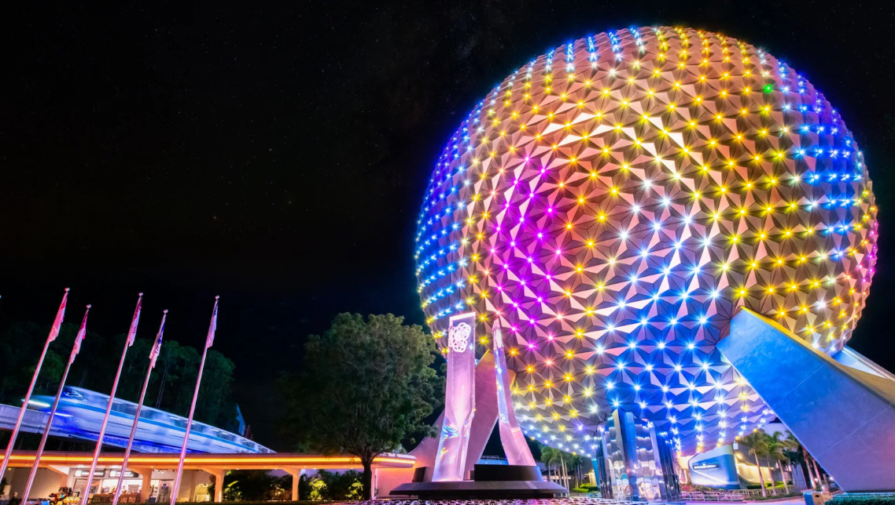

Image Source: Disney
“EPCOT will be an experimental prototype community of tomorrow that will take its cue from the new ideas and new technologies that are now emerging from the creative centers of American industry. It will be a community of tomorrow that will never be completed, but will always be introducing and testing and demonstrating new materials and systems. And EPCOT will always be a showcase to the world for the ingenuity and imagination of American free enterprise."
- Walt Disney
Walt Disney World's second park, EPCOT (the "Experimental Prototype Community of Tomorrow"), opened on October 1, 1982 with a unique approach to storytelling: half concept of the future, half showcase of world cultures as they are today. As the park has evolved, it has become a central hub for festival and special ticketed events year after year. Let's take a look at how these events shaped wait times throughout 2025 to see when are the best times to attend.